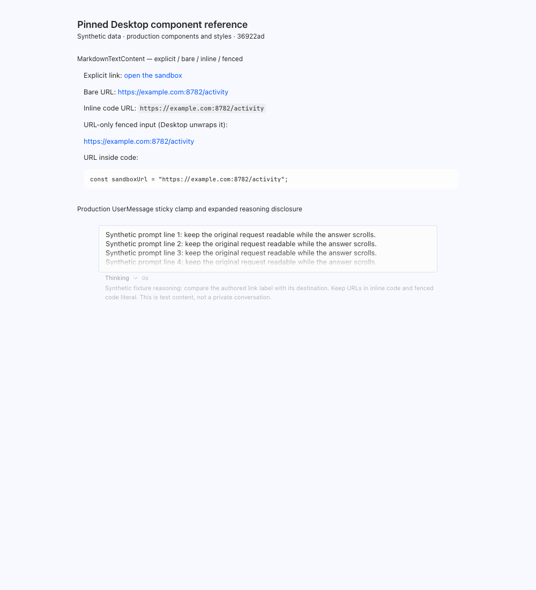
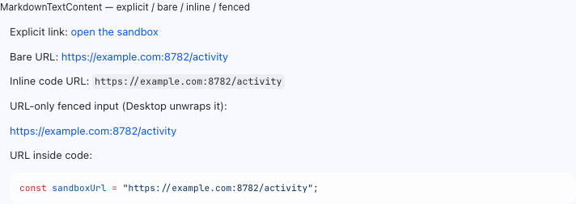
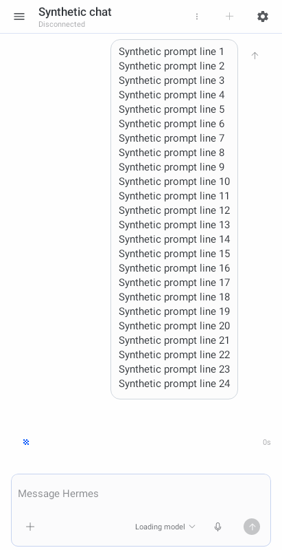
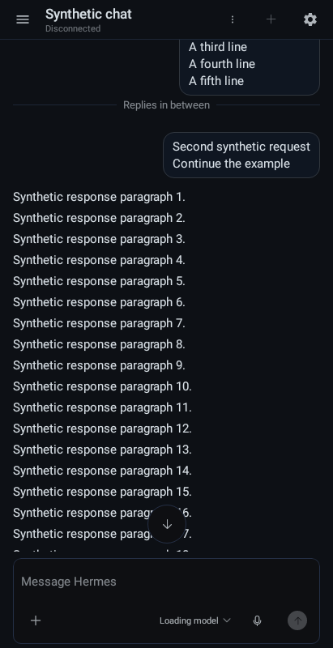
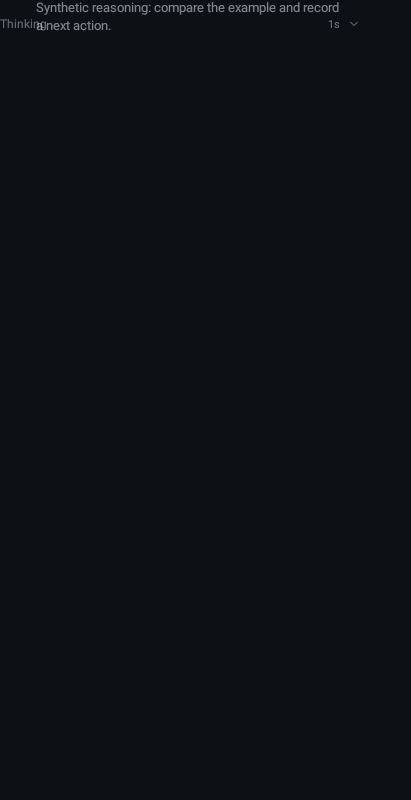
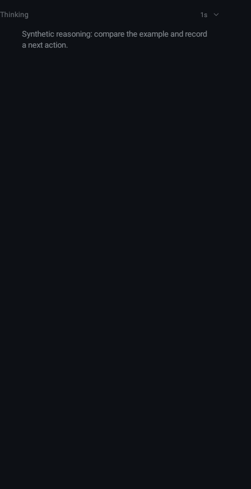
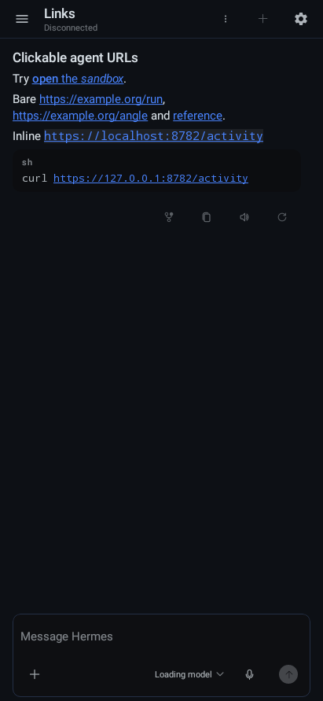

Desktop production components at 36922ad064d65dcf25f8f48df81e1ccf9a55de67. Android screenshots are synchronous synthetic production-Compose Robolectric window draws, not emulator or physical-device acceptance. Fixtures differ in authored text; this compares contracts, not pixel-identical layouts.
The Android sticky prompt has three rendered lines, fades only the third on overflow, and keeps the original inline message complete. The reply divider is a requested mobile adaptation. Expanded Thinking now reserves its own header row. Android code URLs are tappable; Desktop structured code URLs are literal. Existing metadata/caret order debt remains under #72.






